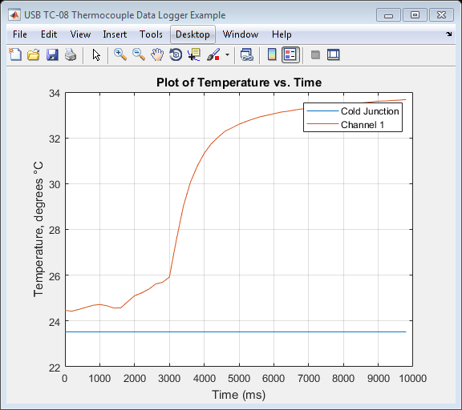

USB TC-08 Thermocouple Data Logger Example
This script demonstrates how to:
- Open a connection to USB TC-08 Thermocouple Data Logger
- Configure the Cold-Junction Channel and Channel 1
- Set the mains filter
- Take some readings
- Plot the data
- Close a connection to the unit
Please refer to the USB TC-08 Temperature Logger Programmer's Guide for further information.
This file can be edited to suit application requirements.
Copyright: © 2014 - 2017 Pico Technology Ltd. All rights reserved.
Contents
Clear Command Window and Figures
clc;
close all;
Load Configuration Information
USBTC08Config;
Load Library
if (ismac()) loadlibrary('libusbtc08.dylib', @usbtc08MFile, 'alias', 'usbtc08'); % Check if the library is loaded if ~libisloaded('usbtc08') error('Library libusbtc08.dylib or usbtc08MFile not found'); end elseif (isunix()) loadlibrary('libusbtc08.so', @usbtc08MFile, 'alias', 'usbtc08'); % Check if the library is loaded if ~libisloaded('usbtc08') error('Library libusbtc08.so or usbtc08MFile not found'); end elseif (ispc()) loadlibrary('usbtc08.dll', @usbtc08MFile); % Check if the library is loaded if ~libisloaded('usbtc08') error('Library usbtc08.dll or usbtc08MFile not found'); end else error('USBTC08Example:OSNotSupported', 'Operating system not supported, please contact support@picotech.com'); end
Define Buffers
numSamples = 1024; pBufferCJ = libpointer('singlePtr',zeros(numSamples, 1, 'single')); pBufferCh1 = libpointer('singlePtr',zeros(numSamples, 1, 'single')); pBufferTimes = libpointer('int32Ptr',zeros(numSamples, 1, 'int32')); overflow = libpointer('int16Ptr',zeros(1, 1, 'int16'));
Open Unit and Display Information
unithandle = calllib('usbtc08', 'usb_tc08_open_unit'); if unithandle > 0 disp('Connected to USB TC-08 device...'); fprintf('\n'); elseif unithandle == 0 warning('USBTC08Example:NoMoreUnitsFound', 'No more USB TC-08 units found'); else unloadlibrary('usbtc08'); error('USBTC08Example:UnitFailedToOpen', 'Unit failed to open.'); return; end % Get unit information infoString = blanks(512); [status.unitinfo, infostring] = calllib('usbtc08', 'usb_tc08_get_formatted_info', ... unithandle, infoString, length(infoString)); disp(infostring); error = calllib('usbtc08', 'usb_tc08_get_last_error', unithandle);
Connected to USB TC-08 device... Driver version: 1.10.0.2 Picopp.sys version: 01.00 Hardware version: 1 Unit variant: 3 Batch and serial: AS299/706 Calibration date: 15Apr11
Configure Device
% Set up channels usbtc08MaxChannels = usbtc08Enuminfo.enUSBTC08Channels.USBTC08_MAX_CHANNELS; typek = 'K'; % Enable Cold Junction and Channel 1 for n = 1:2 status.setChannel = calllib('usbtc08', 'usb_tc08_set_channel', unithandle, ... (n - 1), int8(typek)); end % Set mains filter to 50Hz status.mainsFilter = calllib('usbtc08', 'usb_tc08_set_mains', unithandle, 0); % Find minimum sampling interval min_interval_ms = calllib('usbtc08', 'usb_tc08_get_minimum_interval_ms', unithandle)
min_interval_ms = 200
Capture Data
interval = calllib('usbtc08', 'usb_tc08_run', unithandle, ... min_interval_ms) disp('Collecting data for 10 seconds, please wait...'); % Wait for 10 seconds before collecting data - use a loop to keep on % collecting data. pause(10); [numValuesCJ, pBufferCJ, pBufferTimes, overflow] = calllib('usbtc08', ... 'usb_tc08_get_temp', unithandle, pBufferCJ, pBufferTimes, numSamples, ... overflow, 0, 0, 0); [numValuesCh1, pBufferCh1, pBufferTimes, overflow] = calllib('usbtc08', ... 'usb_tc08_get_temp', unithandle, pBufferCh1, pBufferTimes, numSamples, ... overflow, 1, 0, 0); disp('Data collection complete, plotting data.'); % Plot data figure('Name','USB TC-08 Thermocouple Data Logger Example', ... 'NumberTitle', 'off'); plot(pBufferTimes(1:numValuesCJ), pBufferCJ(1:numValuesCJ), pBufferTimes(1:numValuesCh1), pBufferCh1(1:numValuesCh1)) grid on; title('Plot of Temperature vs. Time'); xlabel('Time (ms)') ylabel('Temperature, degrees °C') legend ('Cold Junction','Channel 1')
interval = 200 Collecting data for 10 seconds, please wait... Data collection complete, plotting data.
Stop the Device
stop = calllib('usbtc08', 'usb_tc08_stop', unithandle); error = calllib('usbtc08', 'usb_tc08_get_last_error', unithandle);
Close Connection to Unit and Unload Library
exit = calllib('usbtc08', 'usb_tc08_close_unit', unithandle); unloadlibrary('usbtc08');